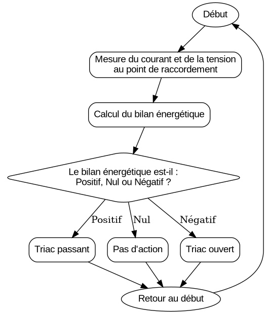

Principe de fonctionnement
Le Mk2PVRouter est conçu pour optimiser l’autoconsommation d’énergie produite par un système photovoltaïque. Son fonctionnement repose sur la surveillance en temps réel du bilan énergétique au point de raccordement et sur la gestion intelligente des surplus d’énergie.
Surveillance du bilan énergétique :
Le routeur mesure en permanence le courant et la tension au point de raccordement au réseau électrique.
Il calcule le bilan énergétique en temps réel, c’est-à-dire la différence entre la puissance injectée dans le réseau et la puissance prélevée.
Si le bilan est positif (excédent d’énergie), cela signifie que la production dépasse la consommation.
Détection des surplus d’énergie :
Lorsque le bilan énergétique est positif, le Mk2PVRouter détecte un surplus d’énergie.
Ce surplus, qui serait normalement réinjecté dans le réseau, est redirigé vers des charges spécifiques.
Gestion des charges :
Le Mk2PVRouter redirige l’énergie excédentaire vers des appareils résistifs tels que des chauffe-eaux, radiateurs ou planchers chauffants.
Grâce à ses modules de sortie-relais, il peut également activer ou désactiver des appareils en fonction de plages horaires, de températures ou d’autres paramètres configurables.
Étalonnage et précision :
Pour garantir une gestion optimale, le routeur doit être étalonné en fonction des caractéristiques spécifiques de l’installation électrique (voir Étalonnage ou Étalonnage).
Avantages :
Réduction des pertes d’énergie en maximisant l’autoconsommation.
Diminution de la dépendance au réseau électrique.
Optimisation des coûts énergétiques.

Schéma illustrant le fonctionnement du Mk2PVRouter.
Exemple d’utilisation
Pendant la journée, le système photovoltaïque produit de l’électricité.
Si la production dépasse la consommation du foyer (par exemple, lorsque les occupants sont absents), le Mk2PVRouter détecte ce surplus via le bilan énergétique.
Le surplus est redirigé vers le chauffe-eau, permettant de chauffer l’eau sans consommer d’électricité du réseau.
Lorsque le chauffe-eau atteint la température souhaitée, le routeur peut rediriger l’énergie vers d’autres charges ou arrêter la redirection.
Fonctionnement des LED
Le Mk2PVRouter est équipé de LED pour indiquer l’état des sorties triac. Ces LED fournissent des informations visuelles sur la quantité d’énergie routée :
Allumage de la LED :
Lorsque la LED associée à une sortie triac est allumée, cela signifie que le courant passe à travers cette sortie.
Clignotement de la LED :
Plus la LED clignote rapidement, plus la quantité d’énergie routée est importante.
Un clignotement lent indique une faible quantité d’énergie routée, tandis qu’un clignotement rapide indique une forte quantité d’énergie.
LED fixe :
Une LED allumée de manière fixe peut indiquer deux situations :
La charge connectée consomme 100 % de l’énergie routée.
La charge connectée ne consomme plus d’énergie, par exemple lorsque la température souhaitée est atteinte (dans le cas d’un chauffe-eau ou d’un radiateur).
Note
Une LED fixe ne signifie pas nécessairement que l’énergie est toujours consommée. Cela peut également indiquer que la charge a atteint son seuil de fonctionnement (par exemple, un chauffe-eau ayant atteint sa température maximale).
Ces indications permettent de vérifier visuellement le fonctionnement du routeur et de s’assurer que l’énergie excédentaire est correctement redirigée vers les charges.
Mode de régulation des triacs
Le Mk2PVRouter utilise un mode de régulation appelé burst fire control pour piloter les triacs. Ce mode consiste à envoyer des trains complets d’ondes sinusoïdales au lieu de découper chaque cycle. En d’autres termes, le triac est activé ou désactivé pour des périodes complètes de la fréquence du réseau (par exemple, 50 Hz en Europe).
Avantages du burst fire control
Réduction des harmoniques :
Contrairement à d’autres modes de régulation (comme le contrôle en phase), le burst fire control ne génère pas d’harmoniques dans le réseau électrique. Cela permet de préserver la qualité du signal électrique et d’éviter les perturbations pour les autres appareils connectés.
Efficacité énergétique : - En minimisant les pertes liées à la commutation, ce mode de régulation améliore l’efficacité globale du système.
Compatibilité avec les charges résistives :
Ce mode est particulièrement adapté aux charges purement résistives, comme les chauffe-eaux ou les radiateurs, qui n’ont pas besoin d’une régulation fine de la puissance.
Ce mode de régulation garantit un fonctionnement stable et respectueux des normes électriques tout en optimisant l’utilisation de l’énergie excédentaire.
Pour plus d’informations sur le burst fire control, consultez la section Burst Fire Control.
Fonctionnalités avancées
Le Mk2PVRouter offre également des fonctionnalités avancées :
Programmation horaire :
Permet de définir des plages horaires pour activer ou désactiver certaines charges.
Gestion multi-phases :
La version triphasée peut gérer les surplus sur plusieurs phases indépendamment.
Surveillance et journalisation :
Les données de bilan énergétique peuvent être enregistrées pour analyse.
Interfaçage avec Home Assistant :
En ajoutant un module ESP32, le Mk2PVRouter peut être intégré à Home Assistant pour une gestion centralisée et une visualisation des données en temps réel.
Il est également possible de piloter certaines fonctions du routeur via Home Assistant, comme la marche forcée.